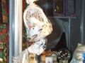

DROID-242
2004.12.14.
blog
droidzóna
levrov
Na nem. Nem. Nem írok a karácsonyról. Megfogadtam, hogy ez a blog mentes lesz még a karácsony nevétõl is. Erre tessék, már kétszer is leírtam. Azt is megfogadtam, hogy nem fogok elemzést írni a karácsonykor megjelenõ gagyik áradatáról. Ez egyrészt az Index, másrészt a Fábry-féle Dizájn Center asztala. Erre tessék. A karácsony jön, bepofátlankodik a blogger életébe, és helyet követel a Droidzónában. Muszáj.
Szóval az történt, hogy keresztülmentem a Keleti pályaudvar elõtti zsibvásáron. Nem is olyan nagy zsibvásár ez, csak egy tucat bódéból áll. Mellesleg érdekes, hogy Demszky papa szemét egyébként annyira zavarják az ilyen bódék, hogy a Nagykörútról is bulldózerrel tüntette el õket, ilyenkor, adventkor azonban valamiért megfeledkezik errõl a szokásáról, és a legízléstelenebb, leghányigerkeltõbb portékák köztéri árusítására is kiadnak engedélyt. Miért nem látom ugyanezt Németországban, Finnországban vagy hasonló helyeken? Na mindegy, nézzük a képeket.
Elõször is: vörös zokni, kissé raszteres Leninnel. Fontos.
Remek ajándék a gyereknek a Nyávogó Cica, csak 690 forintért. A kosárba ragasztott polisztirol macska gombnyomásra enervált "nyáú" hangot hallat, mely igény szerint végtelen ismétlésben is hallgatható.
Ez az emberfej nagyságú, fröccsöntött mûanyag csengõ lakásunk éke lehet az ünnep szent estéjén, betetézve a fehér járólapra terített vörös perzsaszõnyeg, a fekete nadrághoz felvett csíkos ing, a hangszórókból bömbölõ Zámbó Jimmi-örökzöld és a herendi porcelánkészlet mellé leb*szott fantás flakon esztétikai élményét.
250 forintért Ön is hozzájuthat egy multinacionális céget reklámozó kitûzõhöz. Csak most, csak itt.
Famotor. Nem, öcsém, ez nem ízirájder.
Páncélvadász lány
Ezekrõl a karácsonyi bóvlikról mindig az jut az eszembe, hogy az emberiség évente több milliárd tonna mûanyagot termel azért, hogy ezek elkészüljenek, s aztán az egész megy vissza a természetbe.
Kicsit megálltam figyelni, ki a fene vesz ilyet. Nos, a célközönség a 20 és 60 közötti, igen korlátolt nõk tömege, akik egyébként fedik a Kiskegyed/Tina/Meglepetés/Sztori magazinok olvasótáborát is.
Az idei karácsony szuperslágere az elemes kínai törpeszatír. Hihetetlen, de igaz. Gombnyomásra TADADAAAMM hang kíséretében elõveszi a faszát, és recsegve-ropogva közli, hogy "hahaha, áj em jór big men!"

Így néz ki a Nyávogó Cica, ízlésesen celofánba csomagolva.
Betlehem is van, hátha valami hülye még mindig a Jézussal hozza kapcsolatba a karácsonyt.
Törökpohár, kinai teamécses. A Föld gazdasági élete valójában egy különös szimbiózis az európai karácsony és a kínai mûanyagipar közt.
Tyúkláb vas, teccikérteni?